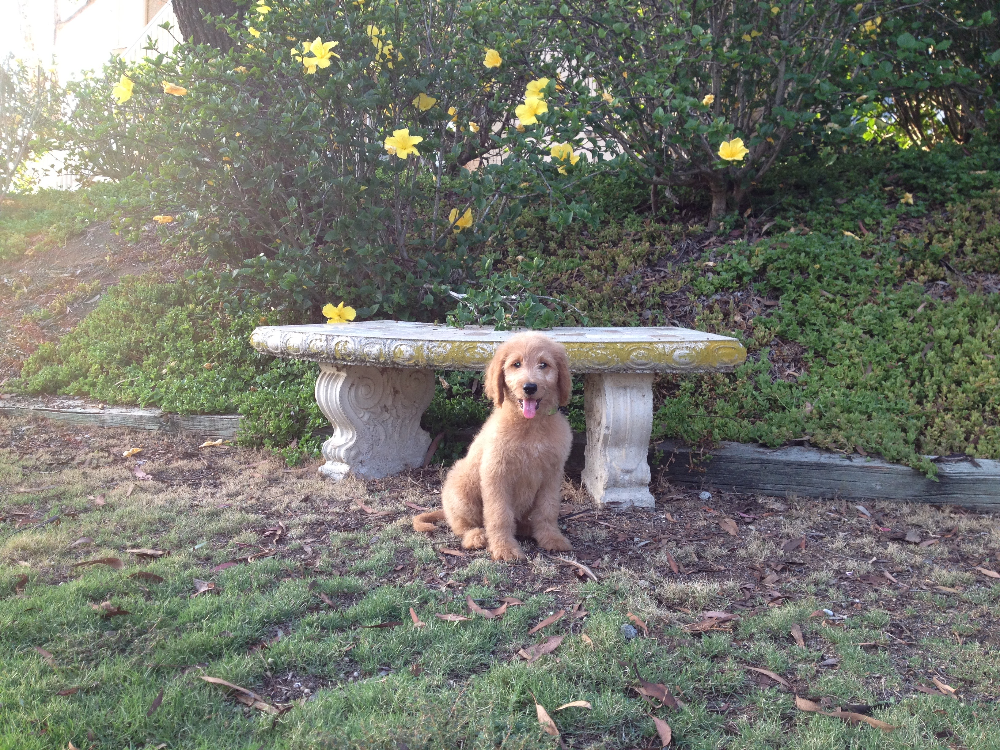
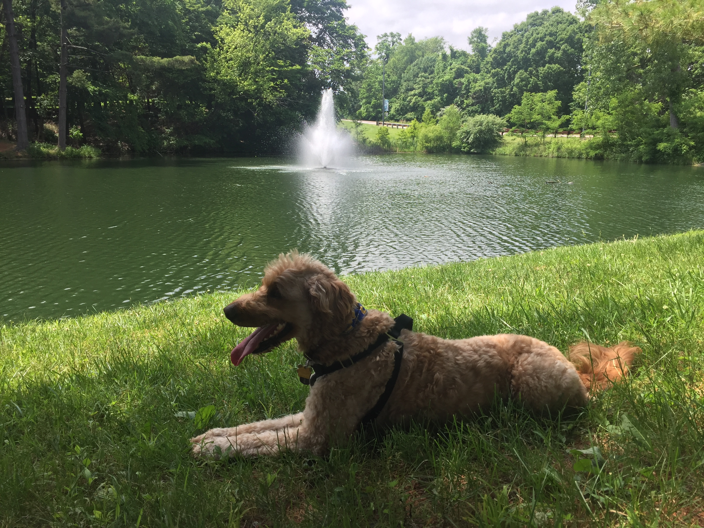
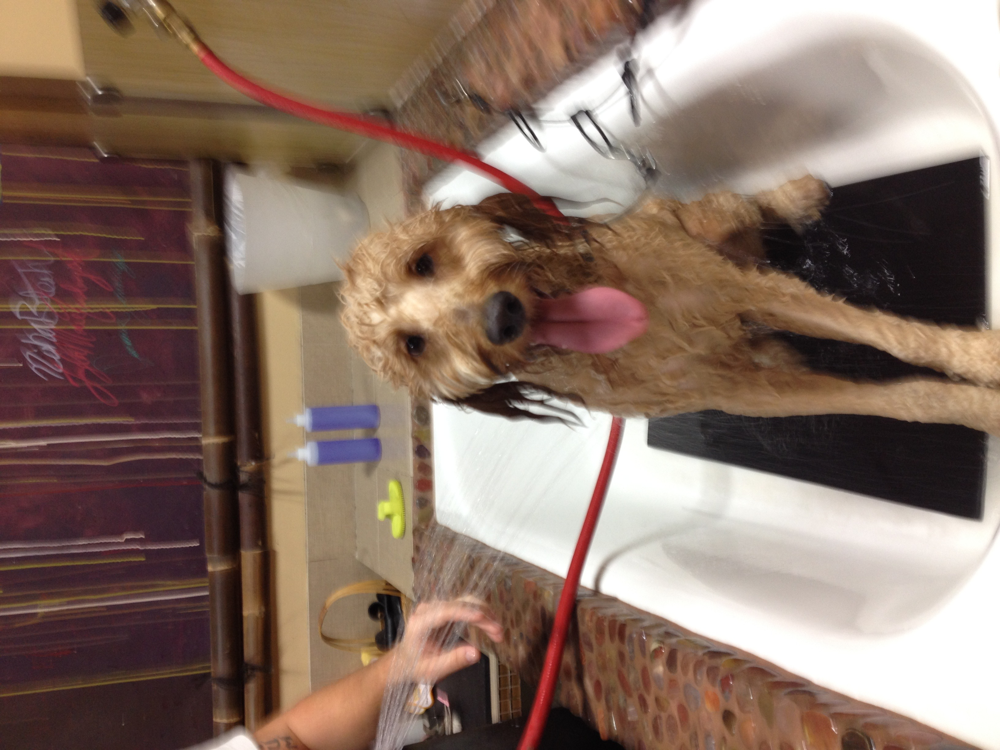
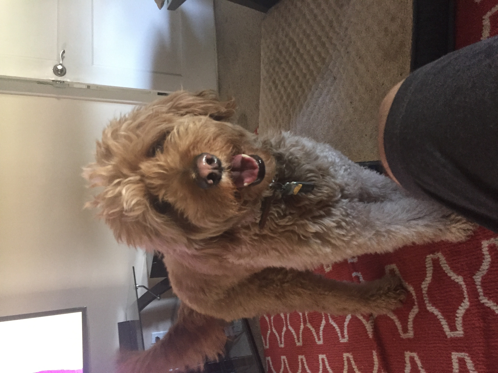
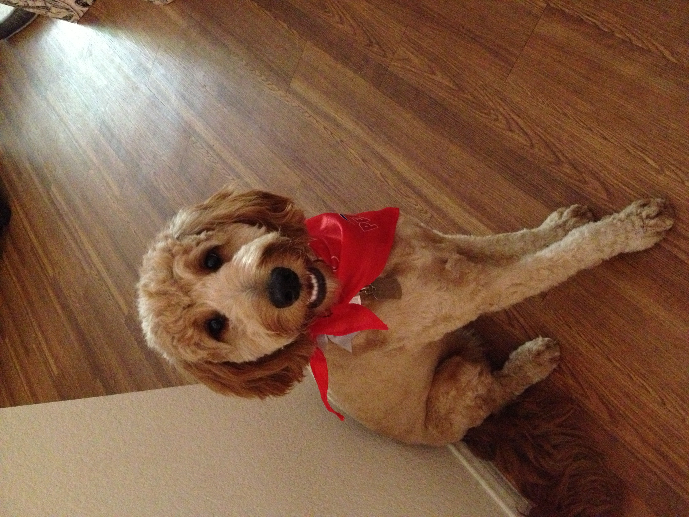
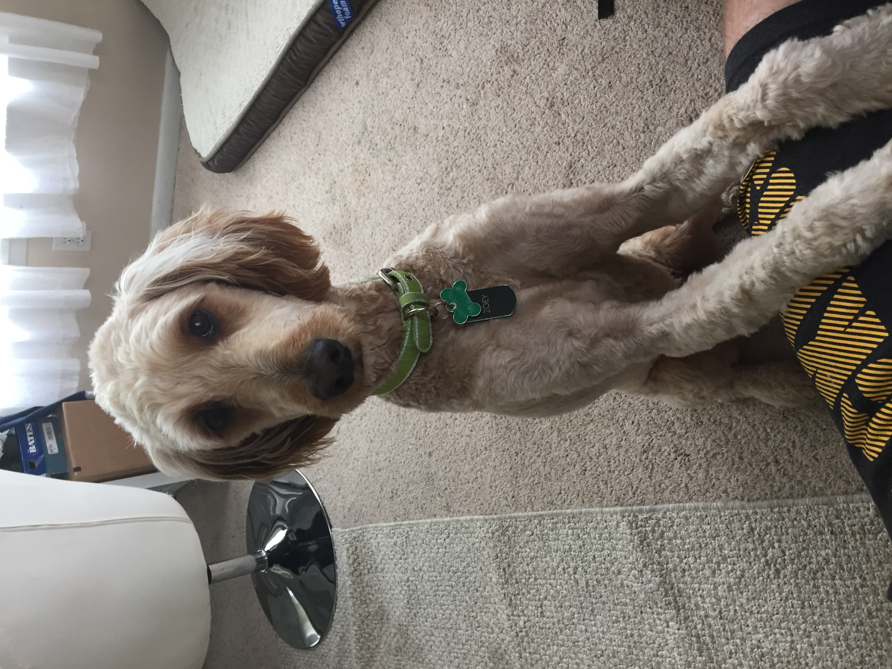
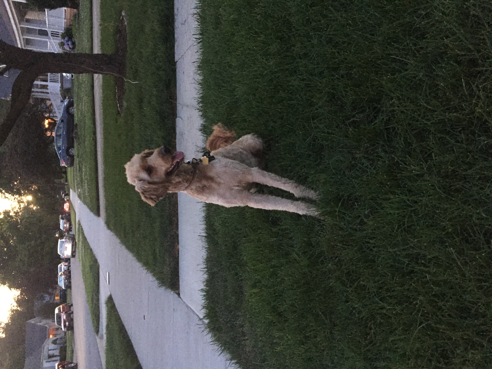
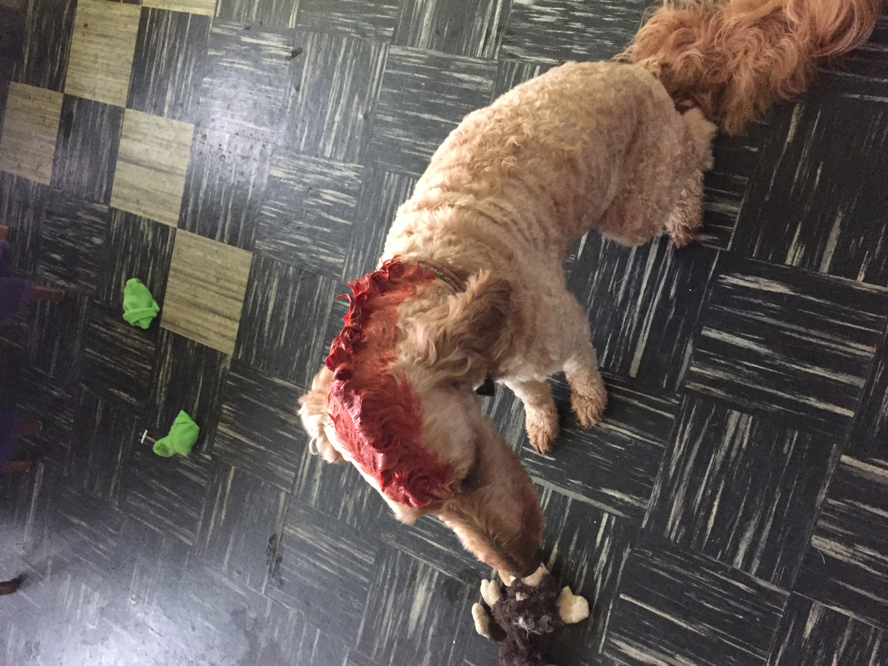

Everyone that meets pretty much loves me. I'm incredibly friendly, playful, and I enjoy meeting everyone! If you ever get the pleasure of meeting, I'm sure you'd like to know all about me. Thus, I'll detail some of my story for you.
In Spring 2012, I was born in Florida as the only female in the litter. My first name was Miss Pink. When my brothers would rambunctiously play, I would watch them from a safe distance. That's not how I play. Once I was three months old, I was put on an airplane and flown across the country to San Diego, CA. This is where I first met my people and where life really started to be amazing.
My people are Big Guy and Pretty Lady. They met me at the airport, took me to their home in my crate, and when they let me out I greeted them with immense enthusiasm! I jumped around, spun in circles, nibbled at their hands, and licked their faces. They told me my new name was Zoey. Excellent name! I knew these people were perfect for me!

"This is me as a puppy posing by a bench and looking great!"
The next two years was filled with learning to sit, learning to swim, growing to 50lbs, chasing cats, running away from cats, and teaching my people how to play. We got into a pretty good daily groove and then everything changed. Everything inside our home was packed up and taken. Then my people took me on what they called a "road trip" to St. Louis, MO. During the trip, I got to see Las Vegas, the Hoover Dam, the Grand Canyon, the Four Corners, the Rocky Mountains, and Kansas City. I think my people had more fun then I did.
I'm Great at Everything
I've picked up many talents during my journey through life. Honestly, everything I try to do I do well. Like... really well. Let me break it down for you. Below I've listed some of things in which I kick ass! Keep in mind that this is not a complete list.
Games
Catch - Throw something my direction and I'll snatch out of the air with my mouth.
Fetch - Throw something in the distance and I'll pick it up and bring it back.
Tug-o-War - Try to take something out of my mouth and I'll try to pull it out of your hands.
Bed defender - Try to get on the bed and playfully growl and block your path.
Keep away- Try to prevent me from getting something that's behind you and I'll manuever to get around you and get it.
Hiking - Doesn't matter the terrain or the distance. I can do it.

"This is me resting after a long hike. Nice view, right?"
Swimming - Combine this with Catch or Fetch and we have the perfect summer activity.
Barking - I don't do it excessively or without cause. I'm like a home security system and a mail carrier alert.
You Know What Grinds My Gears?
I'm mostly laid back but there are some things that bother me. I've listed the worst ones below.
Fireworks - As soon as I hear one, I know the rest of the night will involve me panting. Anxiety level skyrockets!
Thunderstorms- Pretty much natures fireworks.
Car rides - I like getting into cars. I like the windows down. I don't like highway speeds.
Bathing- The worst part is the noise the blow dryer makes!

"This is me barely tolerating this miserable activity."
Aggressive dogs - I'm not sure why they need to bark at me or why they get so close to my face, but I don't like it.
The mail carrier - Every other dog is compelled to aggressively bark at this person. Why should I be any different?
I've Been Groomed Many Different Ways
My people have been somewhat experimental when if comes to getting me groomed. Below are some of the results of their experiments.

This is me at my most shaggiest. My people like the look but it requires some maintenance.

This is me with a fancy cut and trying to smile. If you think the smile lacks sincerity it's because it does.

This is me with a short-all-over cut or the vacation-at-the-lake cut!

This is me with the haircut that seems to be my 'usual'. It's the short-all-over with what my people call a 'mohawk'.

This is me with the mowhawk cut dyed red! It may seem ridiculous but most people thought I was bleeding from my head so I got that going for me... which is nice.